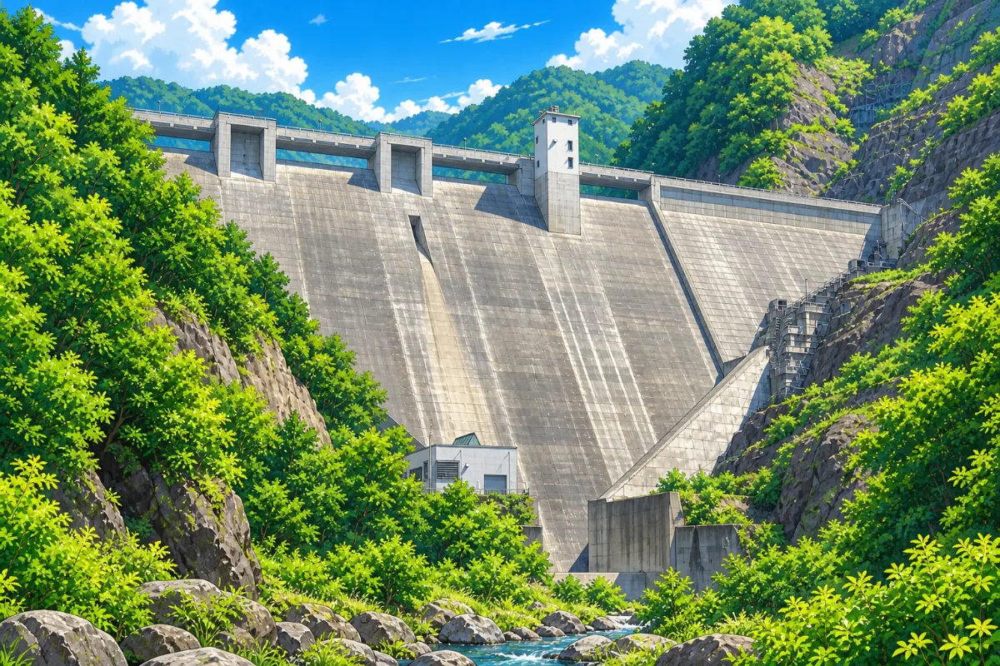

豊丘ダムとよおかだむ
信濃川水系 / 灰野川 / 長野県

利水貯水率
—使える水がどれだけ残っているかの割合です。ダムの容量のうち、水道・農業・工業などに使うために確保された分（利水容量）に対して、いま何%たまっているかを表します。渇水のときに注目される数字です。
未提供（この観測所では公表されていない項目）
有効貯水率
—ダムの容量全体に対して、いまどれだけ水が入っているかの割合です。利水容量に加えて、洪水にそなえて空けておく容量（洪水調節容量）も分母に含みます。洪水期は上側を意図的に空けて運用するため、低い値になるのが普通です。そのため利水貯水率が100%でも、有効貯水率は低いことがあります。
未提供（この観測所では公表されていない項目）
2026年9月18日 00:00 観測の値です（このページの生成: 2026-09-18 00:25 JST）
未提供（この観測所では公表されていない項目）。
値を推定して埋めることはしていません。下の「このページの情報について」に、確認した情報源を記載しています。
| 観測日時 | |
|---|---|
| 所在地 | 長野県須坂市 |
| 水系 / 河川 | 信濃川水系 灰野川 |
| 管理者 | 須坂建設事務所 |
| 貯水位 | 844.33 m |
| 貯水量 | 851 千m³ |
| 全流入量 | 0.77 m³/s |
| 全放流量 | 0.77 m³/s |
| 緯度 / 経度 | 36.618611 / 138.381389 |
このページの情報について
ダムの基本情報
—
貯水率データ
国土交通省 川の防災情報ホームページ（https://www.river.go.jp/kawabou/pcfull/tm）を加工して作成
観測所：事務所コード 5121 / 観測所コード 18（観測所ID 0512100700018）
この観測所での分類：信濃川水系 灰野川